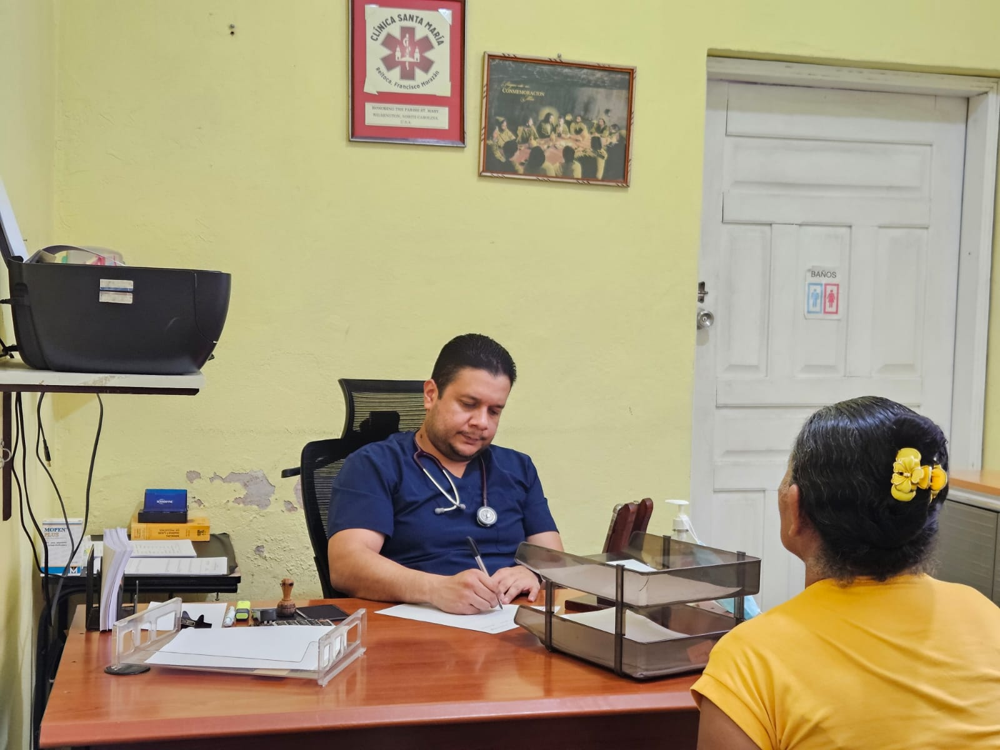

Más de 55,000 atenciones médicas que reflejan compromiso social
El Proyecto San Francisco de Asís ha construido, a lo largo de los años, una labor significativa en favor de la salud comunitaria. Sus servicios han beneficiado a miles de personas en municipios del sur de Francisco Morazán.
Entre los datos más destacados se encuentran más de 55,000 atenciones médicas brindadas, más de 46,000 estudios de laboratorio realizados y más de 100,000 medicamentos dispensados. Estas cifras muestran el alcance del trabajo desarrollado.
Además, el proyecto ha impactado de forma directa e indirecta a una población aproximada de 50,000 habitantes, especialmente en comunidades con acceso limitado a servicios de salud.
Este esfuerzo refleja no solo la continuidad del proyecto, sino también el valor de una atención cercana, humana y comprometida con el bienestar de las familias más vulnerables.